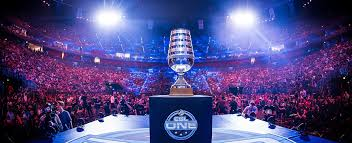

|
 |
O ESL ONE RIO MAJOR MUDOU-SE PARA NOVEMBRO DEVIDO A CORONAVÍRUS,
COM UM AUMENTO NO PRÊMIO DE US $ 2 MILHÕES; CANCELADO O SEGUNDO MAIOR DE 2020
O evento, que aconteceria de 11 a 24 de maio, verá a fase dos campeões ainda no local original, a Jeunesse Arena, de 19 a 22 de novembro. Ele ocupará o espaço reservado no calendário reservado para o Major de outono de 2020, o que significa que, pela primeira vez desde 2013, quando o primeiro major foi realizado, haverá apenas um evento dessa estatura em um ano civil.
O cancelamento do segundo Major de 2020 representará um aumento no prêmio em dinheiro para o ESL One Rio, que terá US $ 2 milhões em oferta - uma premiação recorde para torneios Counter-Strike

O anúncio é tão pouco surpreendente quanto os eventos de coleta em massa serem adiados ou simplesmente cancelados em todo o mundo. No início deste mês, a Valve decidiu cancelar o EPICENTER Dota 2 Major, agendado para os dias 2 e 10 de maio, o que praticamente confirmou que o Counter-Strike Major no Rio não iria adiante como planejado. No momento da redação deste artigo, havia 1546 casos confirmados do novo coronavírus no Brasil e 25 mortes, três dos quais no estado do Rio de Janeiro